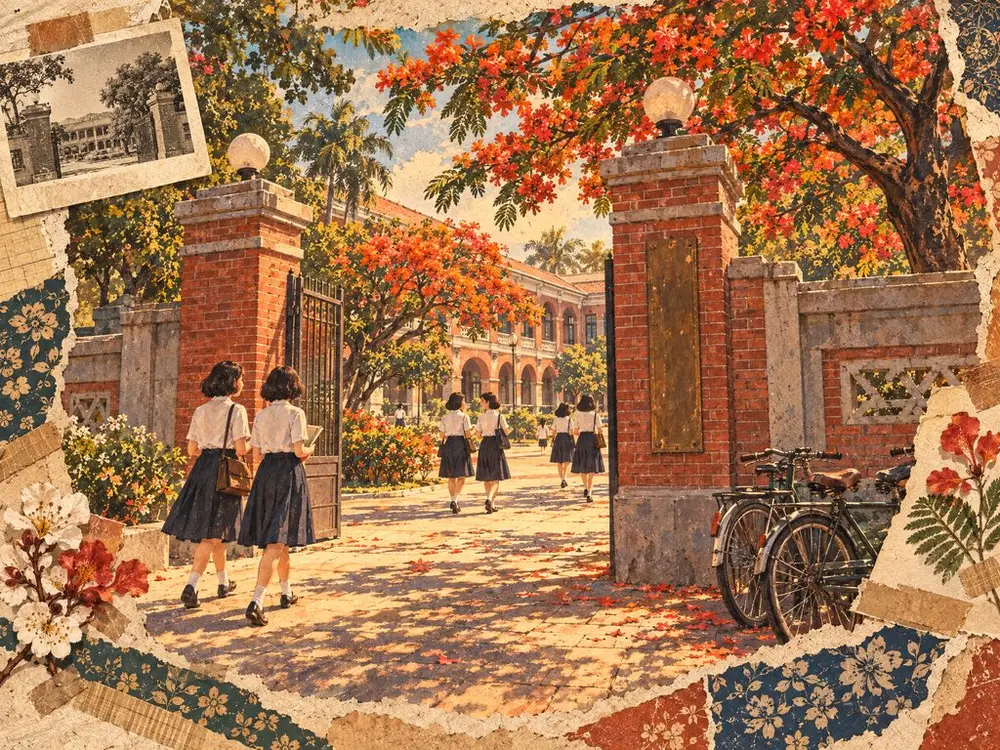
南應的起點・台南家政專科學校
私立台南家政專科學校奉准立案。
看那段故事
全女校時代，美姿美儀是每日必修。旗袍課、家政課，一針一線縫出了第一代南應人的樣子。
我們曾經在同一個校園裡青春過。現在，換我們把散落各地的南應人，再一次聚在一起。
只要姓名、手機和分會，其餘資料可以之後再補。
第一章時光走廊
台南應用科技大學前身為「台南家政專科學校」（台南家專），1964 年創立；歷經台南女子技術學院（1997）、台南科技大學（2006），於 2010 年正式更名為「台南應用科技大學」。
學校以文化創意為辦學核心，是全台科技大學中唯一擁有完整藝術學院（音樂、舞蹈、美術、漫畫）的大學，設計與藝術教學屢獲德國紅點設計獎、iF 設計新秀獎等國際肯定。一甲子以來，無數校友在演藝、設計、藝術、餐飲、文教與公共事務各領域發光發熱。

私立台南家政專科學校奉准立案。
全女校時代，美姿美儀是每日必修。旗袍課、家政課，一針一線縫出了第一代南應人的樣子。
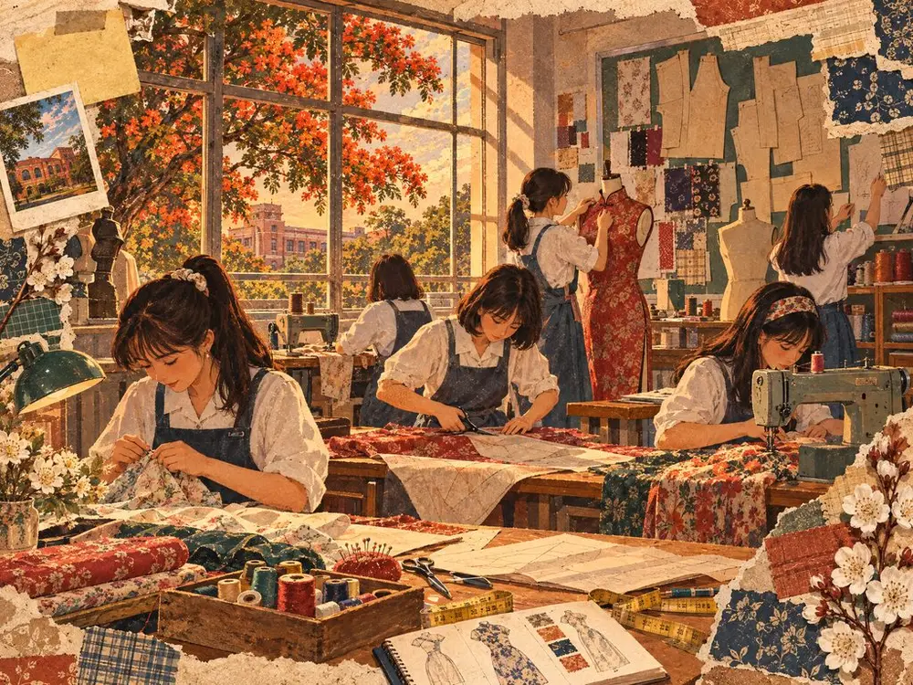
改制為台南女子技術學院。
巧藝並修，創意的搖籃開始發光。設計、藝術與家政並進，奠定了日後南應大的文創底子。
改名台南科技大學，同一年開始招收男生。
校園裡第一次出現了男同學。從女子學校走向男女同校，南應的故事多了新的聲音。
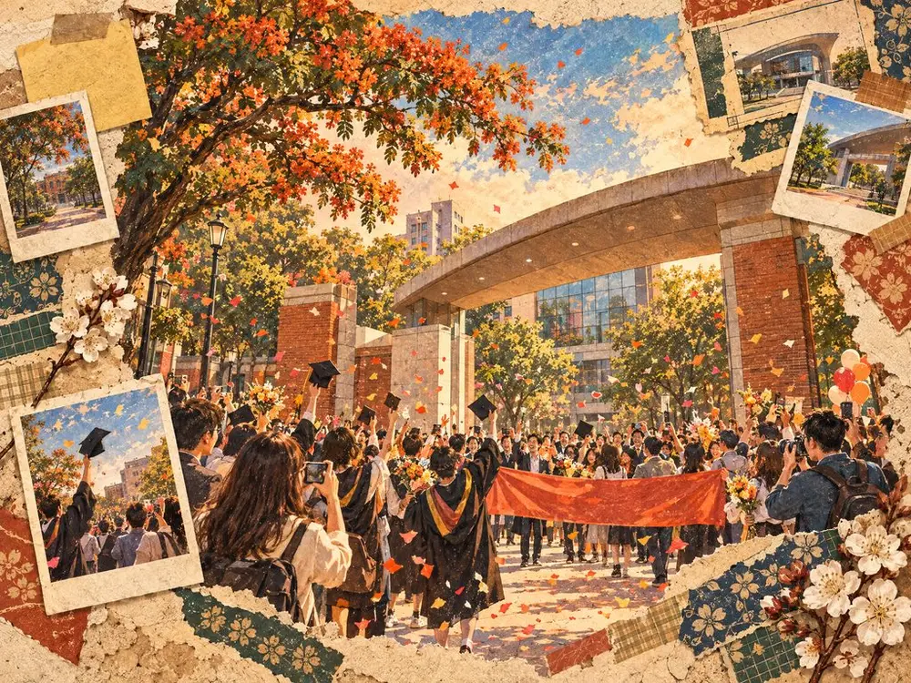
更名為台南應用科技大學，持續拓展藝術、設計與科技實務。
我們的名字，叫南應大。從這一年起，每一屆畢業生的證書上，都印著同一個校名。
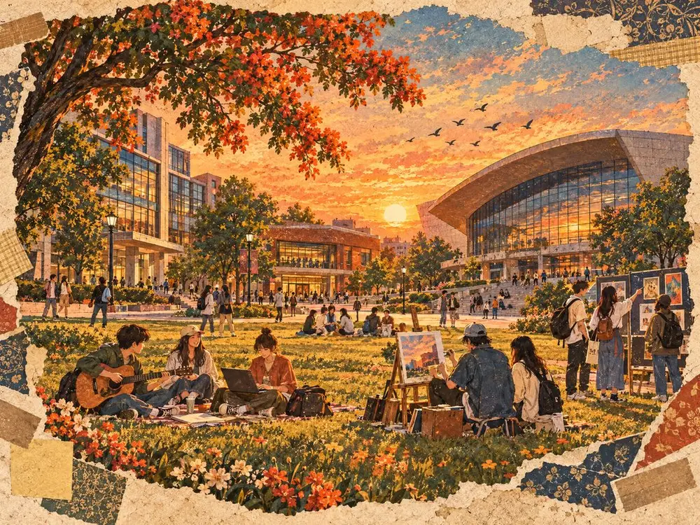
生活科技／管理／設計／藝術。
唯一的旗袍課、最完整的家政學程，到今天都還在這裡。走得再遠，南應的根還是同一個。
第二章南應人，真的很厲害
以校方公開資料中的傑出校友為代表，之後會持續補上更多南應人的故事。
橫跨戲劇與綜藝的知名演員，螢光幕前的熟面孔。
從選美舞台走向戲劇與時尚圈的亮麗學姊。
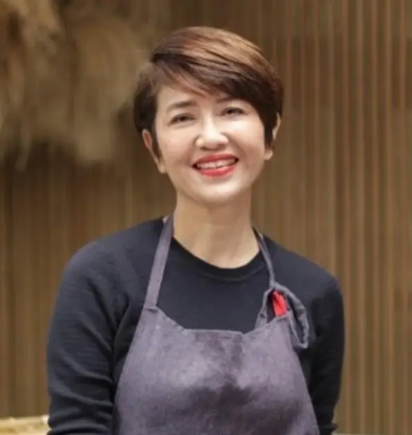
親切自然、深受觀眾喜愛的節目主持人，也經營「阿嬌生活廚房」。
投身公共事務、長期關懷地方發展的學姊。
73 級音樂科畢業。國立清華大學教授暨藝術學院院長、迪里美聲樂集藝術總監，持續投入演出、教學與學術。
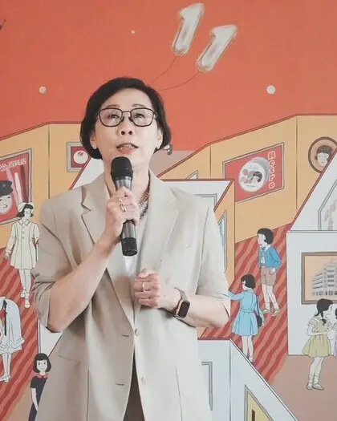
110 級國際企業經營研究所畢業。高青開發董事長暨總經理，經營 FOCUS 時尚流行館與台南林百貨。
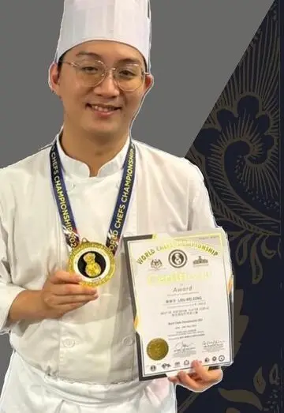
旅館管理系校友，台南晶英酒店 ROBIN’S 牛排館領班；2024 WCC 世界廚藝大賽奪 4 面特級金牌、5 金 1 銀。
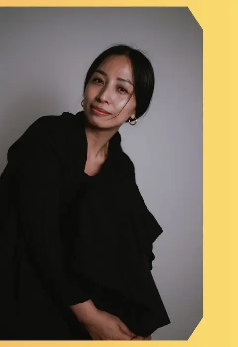
舞蹈科 87 級、舞蹈系 96 級。蒂摩爾古薪舞集團長暨藝術總監，把台灣文化與部落藝術帶上國際舞台。
65 級美術工藝科畢業。全國家長會名譽理事長、地檢署教誨師，曾任總統教育獎、師鐸獎評審。
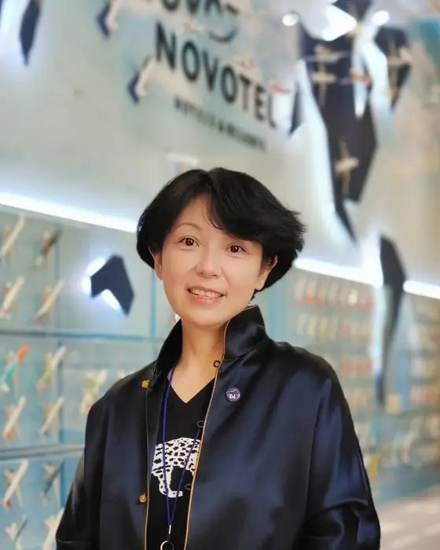
曾任中華航空多項主管職務，2025 年起擔任台灣虎航董事長，是虎航首位女性董事長。
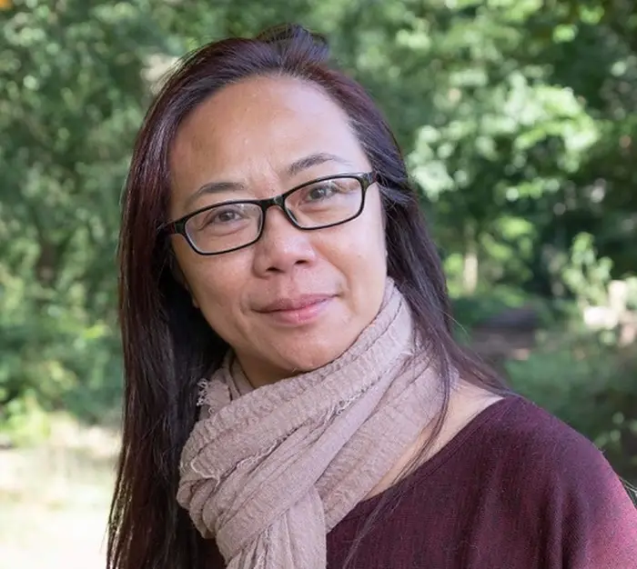
旅英表演藝術製作人與策展人，創立足跡藝術，策劃愛丁堡藝穗節「臺灣季」。
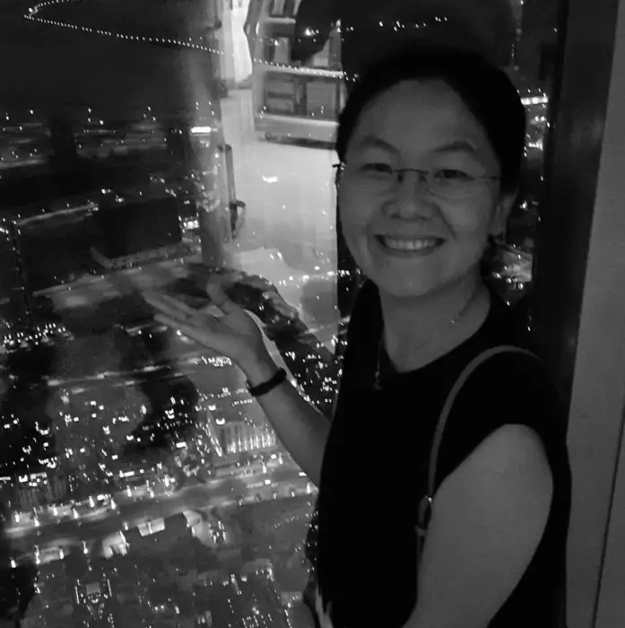
台南家專室內設計科畢業，現任實踐大學建築設計學系助理教授，著有《台灣公宅100年》。
音樂科系校友、職業作曲家，曾獲美國學術音樂大獎、全球音樂大獎。
台南女子技術學院（今南應大）藝術學系畢業、成功大學政治經濟研究所碩士。從立委辦公室主任一路走進議會，現任台南市東區市議員。
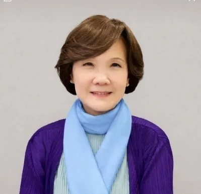
美術系碩士班 112 級。比特科技有限公司財務長、校友會理事。商設與美術等藝術活動企劃、財務管理、公益服務等資源整合。
照片皆為本人真實照片，取自標示的公開來源，版權屬原作者或原單位所有。
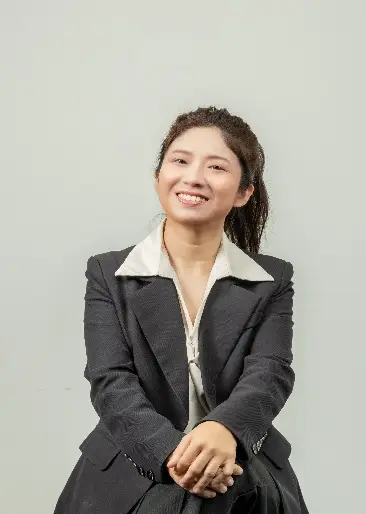
2027 理事長候選人第三章校友會第 10 屆候選人理念
2027 年台南校友會理事長候選人陳佩君的競選理念：讓校友會不只是一份名冊，而是一個有資源、有人脈、有事情可以一起做的南應人平台。
商務媒合、經營諮詢、合作案對接——校友的生意，優先找校友。
產業論壇、企業參訪、會員專屬優惠，把校園人脈延伸成職涯籌碼。
認識南應校友會的理監事校友們，每一位的照片與簡介。
目前已有 38 位夥伴，點名字可以直接看他們的個人網頁，之後還會持續增加。
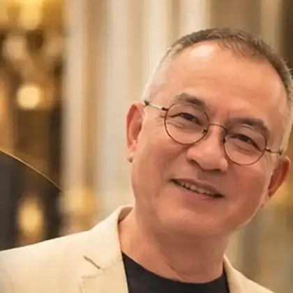
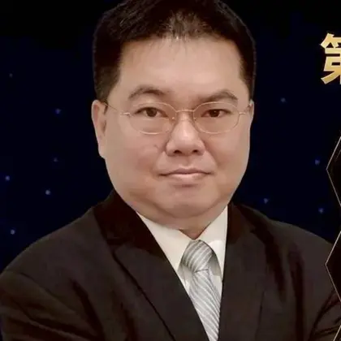
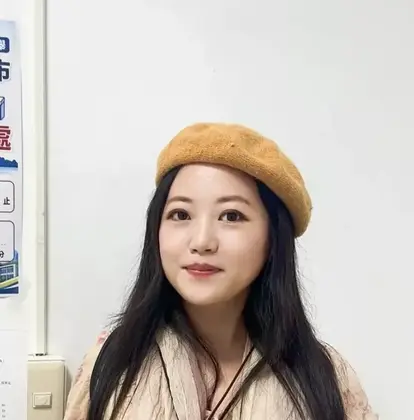
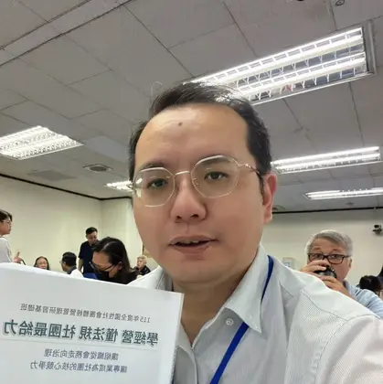
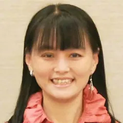
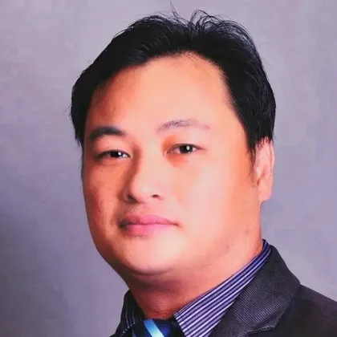
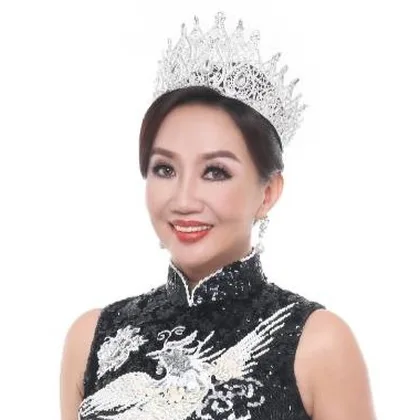
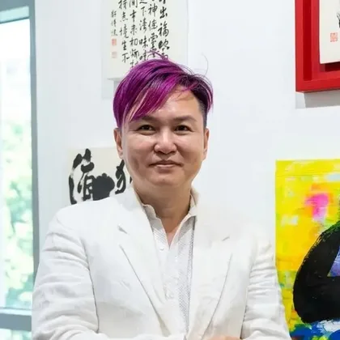
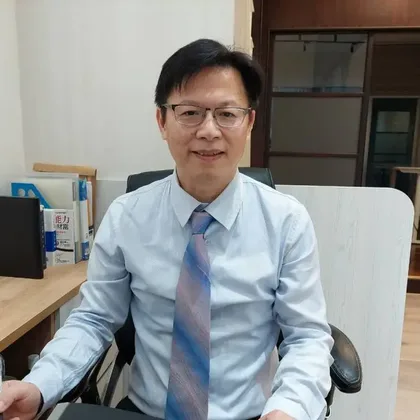
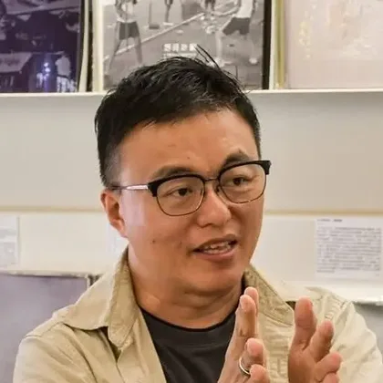
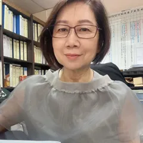
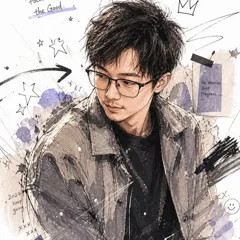
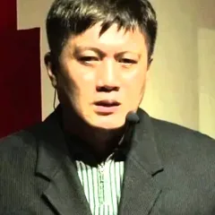
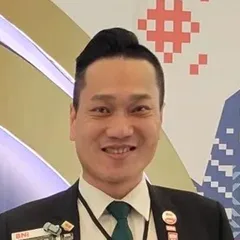
第一步，我們先為校友打開這幾扇門。
第四章會員招募
校友會正式招募兩種會員——贊助會員，讓你的故事被聽見；榮譽會員，讓你的名字被記住。你的會費，會成為校友會辦講座、做專訪、維護平台的力量。
贊助會員Try it
輸入看看，右邊會即時變成你的樣子。這只是試玩，資料不會送出；正式版由校友會幫你排版——照片、頭銜、幾句話介紹你，再加上常用連結，想轉傳給客戶、朋友都方便。
參考：理監事校友卡片 →把台南的老味道，做成年輕人也愛的伴手禮。
點名字，直達每一位的個人品牌網頁。以下為品牌頁範例。
以林家旭博士的頁面為例：從輔大織品系、百貨與品牌業界，到大學講台與水墨飛白個展，一整條人生路被說得清清楚楚。榮譽會員拿到的，就是這個規格，和「顧問師天團」同一級別。
贊助廠商Sponsor Partners
不是會員、不用會費。提供自家產品讓校友會做福利、抽獎，我們把你的名字、商品與 EDM 放上「贊助廠商榮譽牆」。
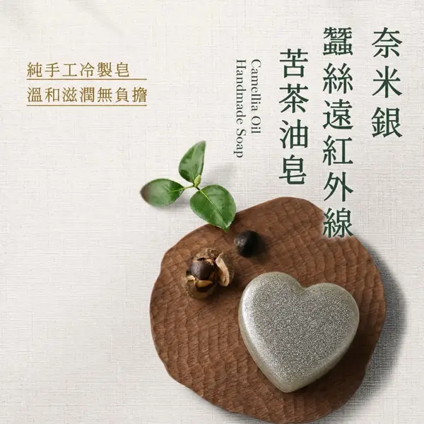
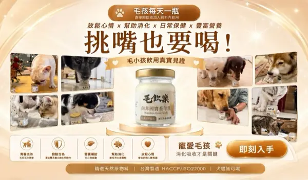
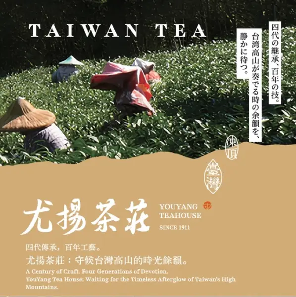
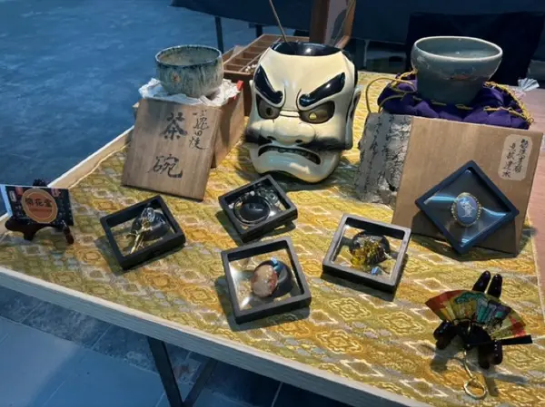
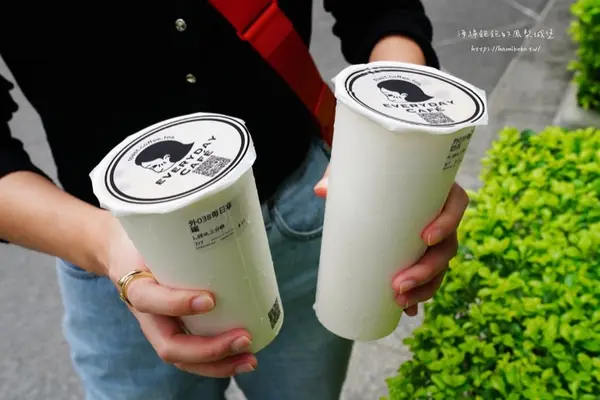
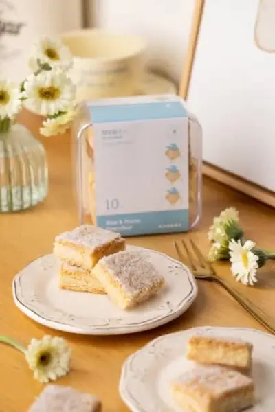
※ 以上為示範單位，取自「AI 微論壇」台南場現場設攤與贊助的夥伴，正式榮譽牆將依校友會贊助廠商名單陸續更新。 我是贊助廠商，我要提供禮贈品 →
| 兩種會員，比一比 | 贊助會員 NT$1,500 | 榮譽會員 NT$10,000 以上 |
|---|---|---|
| Podcast 專訪 | 包含 | 包含 |
| 你的頁面 | 一頁式個人簡介 EDM＋超連結 | 專屬個人品牌網頁（顧問師天團等級） |
| 內容有多深 | 照片、頭銜、簡介、幾個常用連結 | 學經歷、專長、生活事蹟、公益足跡、媒體牆、照片牆、聯絡 |
| 出現在哪裡 | 比照理監事校友簡介的待遇 | 校友會榮譽欄，點名字直達你的品牌頁 |
| 後續修改與維護 | — | 校友會負責 |
| 最適合 | 想先跟校友會連上線、讓同學知道你在做什麼 | 想在南應人脈圈建立個人品牌、接案、被邀約 |
回答三題，幫你配對。
贊助會員拿到的是 Podcast 專訪和一頁式個人簡介 EDM，規格比照理監事校友卡片；榮譽會員的名字掛在校友會榮譽欄上，點進去是一整頁個人品牌網站，而且之後的修改與維護都由校友會負責。
可以。表單只要姓名、手機和分會，送出後專人會跟你聯繫，一步一步把需要的照片和資料整理出來。
聊你在南應的回憶、現在在做的事，以及想對學弟妹說的話。錄音時間和方式，專人會跟你約。
品牌頁上線後，你有新的頭銜、得獎、報導或活動，傳給校友會，我們幫你更新到頁面上，不用自己學架網站。
送出表單後，專人會跟你聯繫，說明繳費方式並確認你選的方案。
可以，表單裡選好你想加入的分會（台南、台中、高雄、台北、嘉義），我們會一起幫你登記。
第五章互動記憶牆
那些年在南應之心、鳳凰樹與紅樓宿舍的日子——你，還記得嗎？一張照片、一段文字，就是一頁回不去的時光。
線上講座主題由大家決定
想聽什麼、想要什麼樣的講座，都可以寫在這裡，校友會會參考大家的願望來安排。
第六章Now · Your turn
不用先想起完整畢業資料。選好身分，留下姓名、手機和分會就可以送出，我們後續再協助確認畢業級別、科系與校友資訊。